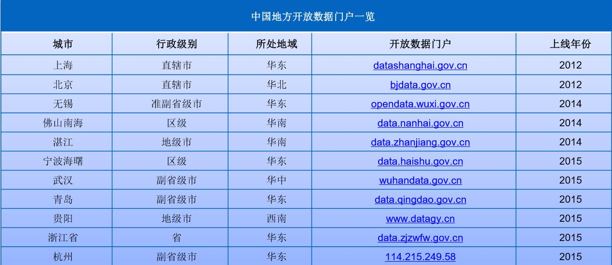

2015年8月30日发布的《促进大数据发展行动纲要》是中国第一个明确推动数据开放的国家层级政策文件。该文件中对中国政府开展数据开放的主要动因总结道：「推进数据资源向社会开放，增强政府公信力，引导社会发展，服务公众企业」，具体来看：
一是要通过数据开放进一步改革社会治理模式，提升公共服务模式，从而增强政府自身公信力。沿着这一路径，我们可以理解中国数据开放的将会进一步打造精准治理，促进政府监管和社会监督有机结合，有效调动社会力量参与社会治理的积极性，并通过数据的开放促进多方协作，形成共治共商的社会治理新模式。而从公共服务角度而言，数据开放可以进一步推动服务型政府的建设，用于构建以人为本、惠及全民的民生服务新体系。政府数据的开放将会充分调动市场力量，针对公用事业、市政管理、城乡环境、农村生活、健康医疗、减灾救灾、社会救助、养老服务、劳动就业、社会保障、文化教育、交通旅游、质量安全、消费维权、社区服务等领域提升服务的质量和覆盖能力。
二是要引导社会发展，建立运行平稳、安全高效的经济运行新机制。通过数据的开放，可以进一步提升信用、财政、金融、税收、农业、统计、进出口、资源环境、产品质量、企业登记监管等领域发展的透明性，实现社会对经济运行更为准确的监测、分析、预测、预警，提高决策的针对性、科学性和时效性，提升宏观调控以及产业发展、信用体系、市场监管等方面管理效能，保障供需平衡，促进经济平稳运行。
三是要开启大众创业、万众创新的创新驱动新格局。形成公共数据资源合理适度开放共享的法规制度和政策体系，通过率先开放信用、交通、医疗、卫生、就业、社保、地理、文化、教育、科技、资源、农业、环境、安监、金融、质量、统计、气象、海洋、企业登记监管等重要领域数据，带动社会公众开展大数据增值性、公益性开发和创新应用，充分释放数据红利，激发大众创业、万众创新活力。
《促进大数据发展行动纲要》将开放数据工程列为了十大关键工程之一，设定了如下目标：
一是要制定工作计划和发展标准。《纲要》明确指出，政府部门和事业单位等公共机构应梳理并发布数据资源清单，制定公共机构数据开放计划，落实数据开放和维护责任，从而统一汇聚公共数据资源，集中向社会开放。进一步而言，《纲要》也针对数据的标准提出了要求，指出应当提升提升政府数据的一致性和准确性，从而促进互联互通，提高共享能力。
二是要建设统一开放平台。《纲要》中明确设定了发展的时间节点，要求在2018年底前，建成国家政府数据统一开放平台，并在2020年底前，逐步实现信用、交通、医疗、卫生、就业、社保、地理、文化、教育、科技、资源、农业、环境、安监、金融、质量、统计、气象、海洋、企业登记监管等民生保障服务相关领域的政府数据集向社会开放。
三是要改革数据采集形成机制，引导非政府单位的数据开放。《纲要》指出，应当建立政府和社会互动的大数据采集形成机制，强调大数据时代，政府非唯一数据源，应当积极寻求以数据为要素的政府机构和社会力量的合作，优势互补，建立数据采集到汇流的机制。而更进一步，在推动政府数据开放的同时，塑造全社会数据开放文化，引导非政府机构例如企业、行业协会、科研机构、社会组织等主动采集数据并开放数据。
国家统计局在2013年上线了其重新改版的网站「国家数据」(data.stats.gov.cn)，是国内第一个国家级公共机构推出的可自由下载、利用、传播数据的数据门户。
「国家数据」的数据内容涵盖了国家统计局职能范围内所采集汇总的各类统计数据，按照采集时间频度分为月度数据、季度数据、年度数据，按地域分为地区数据、部门数据和国际数据。平台除提供了数据下载之外，亦提供了数据的在线可视化和统计分析功能，便于使用者基于开放数据获取即时的洞见。
国家气象局所推出的「气象数据开放平台」面向开发者提供了2个API接口，一为普通气象接口，包含369个地级市的3天气象预报及三个气象指数（穿衣指数，舒适度指数，晨练指数），二为常规气象接口，包含国内全站2566个县级以上城市未来3天常规预报以及三个气象指数。
国家林业局的中国林业数据开放共享平台（data.forestry.gov.cn）于2016年上线，据相关新闻报道所称，其对国家林业局各司局各直属单位以及全国各级林业主管部门多年形成的各类数据成果资料、国内外各类公开的林业信息资源进行整合，同时开放数据上传平台，丰富各类林业数据，建成了中国林业数据开放共享平台。
国家农业部于2015年年底发布了《推进农业农村大数据发展的实施意见》，其中明确指出：
「推进数据共享开放。整合农业部数据资源，统一数据管理，实现数据共享。农业部各类统计报表、各类数据调查样本和调查结果、通过遥感等现代信息技术手段获取的数据、各类政府网站形成的文件资料、政府购买的商业性数据等在国家农业数据中心平台共享共用。通过项目资金安排带动数据资源整合，除国家规定保密的数据外，对不共享、不按规定开放数据的，严格控制安排相关项目资金。通过内部整合和外部交换，逐步推进部内司局之间、涉农部门之间、中央与地方之间数据共建共享。编制农业农村大数据资源开放目录清单，制定数据开放计划，推动各地区、各领域涉农数据逐步向社会开放，做到数据应开放尽开放，提高开放数据的可利用性。」
国家环保部于2016年发布了《生态环境大数据建设总体方案》，其中明确指出：
「推进生态环境数据开放。建立生态环境数据开放目录，制定数据开放计划，明确数据开放和维护责任。优先推动向社会开放大气、水、土壤、海洋等生态环境质量监测数据，区域、流域、行业等污染物排放数据，核与辐射、固体废物等风险源数据以及化学品对环境损害的风险评估数据，重要生态功能区、自然保护区、生物多样性保护优先区等自然生态数据，环境违法、处罚等监察执法数据。依托环境保护部政府网站建设生态环境数据开放平台，提高数据开放的规范性和权威性。」
地方层面上，以上海、北京为代表的地方政府则从2011年起便陆续启动了自己的开放数据计划。截至到2015年年底，已至少有11个地方上线了开放数据门户。此外，亦有深圳、广东、威海、常德等地已经陆续启动了相应工作，只是正式的开放数据门户尚未上线。
从目前地方开放数据计划地域来看，目前普遍仍旧集中于沿海或长江流域地区。这些地方普遍有着较好的经济基础，较优秀的信息化底子，具备一定的资源和动力来开展相应工作。

上海图书馆开放数据平台（data.library.sh.cn）于2016年上线，是目前中国第一个文化类非政府职能机构的数据开放平台。其所提供的数据为关联开放数据（Linked Open Data），以API形式对外开放。目前内容囊括中国历史纪年表、地理名词表和机构名录。
海南航空公司旗下海航云科技技术研究院建设了海航数据开放平台（data.haihangyun.com），其有航空、旅游、物流、金融、商业等15个分类，以数据开放API为主要形式向社会进行数据开放。开放内容包括海航集团各成员企业可开放的各类数据，以及互联网其他数据开放平台上各企业组织网络免费数据开放资源，为企业和个人使用海航集团企业数据开展信息资源的社会化开发利用提供数据支撑。
北京大学开放研究数据服务平台（opendata.pku.edu.cn）是由北京大学设立的旨在推进「开放科学」的科研数据开放平台。其目前囊括了北京大学中国调查数据资料库，北京大学可视化与可视分析研究组开放数据，北京大学生命科学学院生物信息学中心等跨学科的开放数据。
开放数据晴雨表 是由万维网基金会（Web Foundation）所启动的一项第三方独立评估。
其评估针对国家级开放数据计划，从「准备度」、「关键数据」、「影响力」三个层面来评估每一个国家在开放数据上的进展。每一个国家的调研由一名研究人员独立完成，然后由一名审稿人审阅和研究主管复审。除此之外，晴雨表也联系各国家政府，期望由一名相应国家工作人员对所有调研问题进行回答，与研究人员的调研相结合，最后产出结果。
对于评估维度中的「准备度」而言，其主要考察了政府、社会团体、企业三个利益相关者对开放数据的准备程度。具体来说，对于政府，准备度意味着「是否有信息公开/隐私保护的法律」、「是否有国家层级的开放数据政策」、「地方政府是否开展开放数据计划」、「是否有竞赛等形式鼓励开放数据创新」；而对于社会团体和企业而言，则意味着「社会团体和企业是否积极参与开放数据的利用」、「是否有面向社会团体和企业的开放数据培训项目」等。
而对于「关键数据」，晴雨表则挑选了15个分别关于「政府公信力」、「社会发展」、「创新」的关键性数据集，评估该国家是否存在满足要求的数据，数据是否可机读，是否开放授权等。
最后从「影响力」角度来说，晴雨表要求基于已有的实证材料如媒体报道、论文等来评估该国家是否已经有因为开放数据而带来的「经济」、「政治」、「社会」的影响力。
在2013年的开放数据晴雨表中，中国排位第61位（共77个国家），而在2014年的评估中，则上升了15位，位列第46位（共86个国家）。
从评估结果来看，中国排名上升，主要归功于2014年间，创业者和企业对开放数据的关注，且地方政府如上海、北京都先后开展了比赛来宣传开放数据并激励数据的创新使用。此外，2014年的评估中也体现了当前关键性数据集的开放性有所进步，且一些数据得到了一定程度的利用，有相关媒体报道了使用后所达成的初步影响力。
但从整体排名来说，中国尚处于中间位置，同西班牙、匈牙利、菲律宾等国家一样被归属于「正在崛起」的类别。此类别的特点是，虽在开放数据的进展中有所创新，结合本地特色开展工作，但仍旧面临诸多严峻的问题，例如体制机制的不完善，法律的缺失等。
而在从G20国家来看，中国的排名则仅仅优于沙特阿拉伯，排位第19。结合澳大利亚 Lateral Economics 所发布的《Open for Business：How Open Data Can Help Achieve G20 Growth Target》报告来看，中国若想要实现报告中所指的依靠开放数据增进GDP增长，那还有很长一段路要努力。尤其是，中国在15个关键数据的开放性上，仍旧需要进一步开放可以用于「创新」的数据，比如国家地图、企业登记注册信息等，这样才能更进一步地推动开放数据的利用，形成正向循环。
国内第三方评估由开放数据中国联合复旦大学数字与移动治理实验室在2015年启动。该项名为「开放数据探显镜」 (http://opendatalens.cn/)的项目致力于全面扫描发展动向，深度探测现状成果，细致显微问题经验。在第一期的评估中，该项目针对中国的7个地方开放数据计划展开工作。这7个地方分别是：北京、上海、武汉、无锡、湛江、宁波海曙、佛山南海。
中国开放数据探显镜的评估框架是基于「通用评估框架(Common Assessment Framework」的。考虑到中国国情及当前推进开放数据门户建设的迫切需求，评估团队建立了三层评估模型，围绕「平台层」、「数据层」、「基础层」开展评估，其中：
基础层，全面考察地方开放数据计划的组织架构和管理机制、政策和法律框架以及地方经济和社会发展水平。
数据层，则更为侧重已经发布的数据数量，基于开放知识基金会的「开放知识定义」评估数据的开放性（如是否可机读），并考察数据元数据完整性、时效性和易用性。
而针对平台层，评估则从平台的功能和体验两方面着手。一方面考察平台是否提供了完备的数据导引、数据获取、数据应用、互动交流的功能，另一方面基于这些功能考察其相应体验及门户整体界面体验。
从基础层来看，当前各地方开放数据计划中仅有上海、南海两地得到了行政长官的公开支持，上海副市长周波、南海（前）区委书记邓伟根都在公开场合发言支持开放数据并有媒体报道，而其他地方虽有相应主管单位领导的支持，但地方行政长官在公开场合的发言支持尚未体现。
而从地方开放数据工作计划角度来看，目前上海是唯一一个有明确公开开放数据工作计划的地方。其发布的《上海市政务数据资源共享和开放年度工作计划》不但明确了整体的战略部署和年度目标，也清楚列明当年的数据开放重点领域清单：2014年计划开放190项数据集，2015年计划开放428项数据集，这份工作方案同时明确了开放政府数据项目相关的配套项目建设（例如政府数据共享政策和平台的完善）。 而在其他地方，目前只有与智慧城市、大数据等相关的公开性的政策文件，并未对开放数据专门公开发布相应政策，也为公开相应工作方案。
从管理体制而言，目前各地方一般都由原有的信息化主管单位比如当地的经济和信息化委员会负责统筹和管理开放政府数据项目，其行政级别一般与其他部门（数据发布单位）相同。目前在管理体制上，南海和上海有一定的创新突破，其主要体现在两地都明确了主管单位的职能和权限，比如南海成立了数据统筹局统筹本地一切数据事宜（包括数据开放），而上海也在2015年初将原有经信委信息化推进处更名为大数据发展处，明确体现其在大数据时代的新定位和职能，统筹推进开放政府数据工作。
从平台层来看，当前各地方开放数据门户的建设普遍能够满足基本的数据导引和获取，但在与用户的互动交流上、数据获取的便捷性上、以及数据应用的展示上仍旧存在诸多问题：
在互动交流方面，虽然多数地方的开放数据平台都提供数据评价功能以及数据请求功能，但多数需要用户注册登录，缺乏便捷性。其次，平台的互动交流功能缺乏及时有效的回应，有些开放数据平台虽然提供了单个数据集的评价功能，但是经过评估团队实验，实际情况为可以提交评价、但一直没有在网页上显示，至于原因是审核尚未或未曾通过，还是评价功能“有名无实”，则不得而知。
而在数据获取方式方面，平台的数据获取普遍缺乏便捷性，大多都必须进行事先的注册登录，且平台注册难度较大，不利于民众快速、便捷地获取平台数据，由此对民众的积极性和满意度有一定的负面影响。而且，多数地方的开放数据平台都未提供数据内容的预览功能，有些开放数据平台即使提供了这一功能，也只是提供了部分数据内容的预览；有些开放数据平台则仅以图片形式或者站外链接的方式来实现这一功能，不利于为公众创造便利的数据获取体验。
而最后，对于数据应用而言，各地方的开放数据平台所提供的数据应用数量还较少。有些平台虽然开设了数据应用频道，但是平台上现存的“应用”并非可下载、可使用的数据应用，而仅仅是功能测试之后的结果；有些平台虽然提供了可下载、可使用的数据应用，但大多并未利用本站数据，或仅仅浅层次地运用了地理位置等基础数据，或即使利用了本站数据也并未对具体使用了哪个数据进行说明；有些平台提供的“数据应用”名不副实，实际上是地方政府部门的政务业务处理系统，是开放数据的来源，而非是数据开放后的实际应用。
从数据层来看，当前各地方存在数据数量整体偏少且可机读比例低、数据多为静态且不按时更新、数据授权协议条款模糊的问题：
就数据数量和可机读性而言，大量高价值，且不涉及到国家安全、商业机密和个人隐私的数据尚未能开放，截至2015年5月，受调研地区的总数据发布量仅为2000个数据集。而各地平均可机读比例仅81%，其中上海发布的可机读数据数量最多（398），北京海曙则发布可机读数据比例最高(100%)，而武汉所发布的数据中46%的数据为不可机读数据，其中大多以PDF或数据可视化截图代替可机读数据发布。
而从数据的更新频率来看，目前各地方所发布数据中平均86.25%的数据是静态数据（以年为单位更新，或按需更新）。在如此低比例的动态数据的前提下，各地数据更新情况仍旧无法令人满意，仅17.21%的数据按时得到了更新，大量数据虽然清晰标明了更新频率但是均未真正实现承诺。
最后从数据授权角度而言，目前各地方都采用了网站免责条款/用户协议的形式对所发布的所有开放数据进行了一次性整体授权。但在相应条款的编写上，则存在较为严重的问题，尚不符合开放数据的法律开放性的原则。主要体现在两个方面：一个是部分地方的授权协议中含有明显有违数据开放性的条款，比如“不得有偿或无偿转让在本网站中获取的各种数据资源”。二是协议中通常对用户的权利含糊不清，未能明确、清晰地赋予和保障使用者的相应权利，比如多个地方都没有条款来明确使用者拥有自由分享传播的权利
社会对开放数据的认知和态度将会决定社会力量参与倡导并利用开放数据的程度。
2015年初，开放数据中国针对当前中国社会各界了解开放数据的程度进行了一次小规模的问卷调研。参与问卷的人群主要来自北京、武汉、上海三地，工作在政府、高校、规划院、NGO等。在收到的近200份答复中，80%的人认为数据免费等同于数据开放。从这一点来说，对于社会大众而言，现阶段的主要焦点还是在于是否能够访问到政府的数据，而不是关心这样的数据是否能够易用（可机读）、是否可以自由使用（开放授权性）。一方面是因为长久以来政府数据对于社会大众而言过于封闭，所以大众在现阶段最关心的是政府数据能否不那么封闭。另一方面，也说明开放数据作为一个新兴概念尚未在社会普及。
而在问卷调研中，开放数据中国关心的另一个问题则是对于现有的开放数据门户，社会大众是否了解他们的存在？问卷调研的结果显示，50%的人群从未听说过任何一个开放数据门户，但其中最早的开放数据门户（上海）早在2012年就已上线。这也暴露出目前政府在运作开放数据项目时，对社会大众的推广宣传的力度不足，不但开放数据这一概念尚未能够很好地得到普及，连作为项目核心用于提供数据资源的开放数据门户也未能得到足够的推广宣传，吸引社会大众的使用。
而在2015年下半年，开放数据中国针对SODA的参赛人群开展了二次调研。面向SODA的参赛选手，开放数据中国在SODA比赛后发放了比赛反馈问卷其中包含了2015年初的认知问题部分，参赛选手可自愿选择是否回答。在总计135份的答卷中，100%的参赛选手知晓datashanghai，60%的人明确知晓数据免费不等同于数据开放（较2015年初改善40%）。而这种变化的一种可能原因则是因为SODA作为一个文化改变的契机，使得更多人能够具象地了解到底什么是数据开放，从而更好地理解其概念并作出判断。